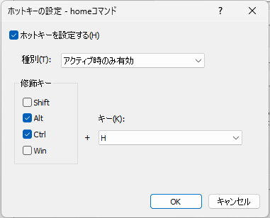

アプリケーション設定
アプリケーションの動作に関する設定を行うための画面。
下記のいずれかの操作を行うと、アプリケーション設定を表示することができる。
入力画面で
settingコマンドを実行するタスクトレイのアイコンを右クリックし、
アプリケーションの設定を選択する
基本
ランチャーの基本動作にかかわる設定をする画面
主に入力画面を表示する際の動作の設定を行う。
ランチャー呼び出しキー入力画面を表示するためのホットキーを設定することができる
入力画面を非表示にして起動するチェックすると、起動直後に入力画面を表示しない
入力画面を最前面に表示入力画面を表示するとき、入力画面を他のウインドウより前面に表示するようにする
入力画面の表示位置
入力画面を表示するときの位置を以下の3つから選択できる前回の表示位置
前回と同じ位置に入力画面を表示するマウスカーソル位置
入力画面を表示するタイミングでのマウスカーソル位置に入力画面を表示するアクティブウインドウの中央
アクティブなウインドウの中央に表示する
ただし、アクティブなウインドウがない場合は前回と同じ位置に表示する
すでにアクティブなときに呼び出しキーを押したら隠れるチェックすると、ランチャー呼び出しキーを押すたびに入力画面の表示/非表示が切り替わる
フォーカスを失ったらウインドウを隠すチェックすると、入力画面がフォーカスを失ったときに、入力画面を非表示にする
隠れるときに入力文字列を消去しないチェックすると、コマンドを実行せずに入力画面を非表示にする際に入力文字列を消去しない
入力画面を次回再表示した際に、前回入力していた内容が維持される
ランチャー呼び出しキー 設定画面
ランチャーアプリの入力ウインドウを呼び出すためのキー設定画面
ホットキーを設定する
修飾キー(AltCtrlShiftWin) + 任意のキーを同時押しすることによりアプリを表示する修飾キー
修飾キーを選択するためのもの。例:
Ctrlのみチェックし、キーとしてAを選択した場合
Ctrl+Aキー
文字を選択する
修飾キーの組み合わせ入力
修飾キー(AltCtrlShiftWin)を二つ組み合わせ入力することによりアプリを表示する方式
同じキーを2回押す、あるいは、異なるキーを同時押しすることでアプリを起動することができる
例:Ctrlキーの2回押し、あるいは、Ctrl+Altキーの同時押し一つ目の入力
一つ目に入力する修飾キーを選択する二つ目の入力
二つ目に入力する修飾キーを選択する
基本＞ショートカット登録
各種ショートカット登録をするための画面
いずれもチェックすると登録され、チェックを外すと登録が解除される
「送る」から登録できるようにするチェックすると、本アプリにコマンドを登録するためのメニューが、エクスプローラのコンテキストメニューの「送る」に追加される

スタートメニューに登録するチェックすると、本アプリを起動するためのメニューがスタートメニューに登録される
デスクトップに登録するチェックすると、本アプリを起動するためのショートカットがデスクトップに配置される
スタートアップに登録するチェックすると、Windowsにログオン(サインイン)した後に自動で本アプリを起動する
作成したショートカットをすべて削除する上記で作成したショートカットをすべて削除する
基本＞効果音
画面操作時に効果音を鳴らす設定をするための画面
もし、音を鳴らせる環境で作業しているのであれば、気分が上がる効果音を設定すると、作業効率がアップするかもしれない。
mp3ファイルのみ指定可能(他の音声ファイルには非対応)
入力欄への文字入力入力欄に文字を入力したときに再生するmp3ファイルを指定する。空欄の場合は何も再生しない。
候補欄の選択項目変更候補欄の選択項目を変更したときに再生するmp3ファイルを指定する。空欄の場合は何も再生しない。
コマンド実行コマンドを実行するときに再生するmp3ファイルを指定する。空欄の場合は何も再生しない。
入力
入力画面のキーワード入力回りの動作に影響する設定を行うための画面
入力画面を表示するときにIMEをオフにするチェックすると、入力画面を表示したタイミングでIMEをオフにする
ネットワークパスを無視するチェックすると、
\\(コンピュータ名)で始まるパスを本アプリでは開かないようにする環境によっては、ネットワークパスの情報を参照したときに数十秒ほど固まることがあるため
C/Migemoによるローマ字検索を有効にするC/Migemo という外部ライブラリを用いて、ローマ字でのキーワード絞り込みをできるようにする
たとえば、
jikokuというキーワードで時刻や自国という文言にマッチするようになる配布元(上記リンク先)からライブラリを入手し、配置する必要がある
下記のような構成になるように配置する。
アプリ配置フォルダ/
(アプリ名).exe
dict/
utf-8/ ※ dictフォルダ内にあるutf-8の方の辞書を参照する
migemo.dll
なお、バージョン0.42.2現在、migemo.dllと辞書データは本アプリに同梱しているため、上記の配置作業は不要。
入力＞キー割り当て
入力画面の操作に関するキーを設定する画面
独自のキーバインドで上下左右の移動や決定操作を行うアプリケーションがある。(例: EmacsのCtrl-N Ctr-P Ctrl-Mなど）。
それらのアプリの使用感に寄せるための設定

入力キーの画面割り当て上へ候補欄の選択項目を一つ上へ移動するキーを割り当てる
下へ候補欄の選択項目を一つ下へ移動するキーを割り当てる
決定入力画面での入力内容を確定させるキーを割り当てる
補完入力画面での入力内容を補完するキーを割り当てる
メニュー表示選択している候補のコンテキストメニューを表示するキーを割り当てる
テキストをコピー入力欄に入力された文字列をクリップボードにコピーする
コピーした後、入力欄は非表示になる
入力画面のウインドウ移動
入力画面を一時的に上下左右に移動するキーの割り当てを行う(次回表示時は元の位置に戻る)。
入力画面の後ろにあるテキストをランチャーに手入力するにあたり、入力画面を一時的に移動したい、というケースで使う上へ移動入力画面を上方向に移動する
下へ移動入力画面を下方向に移動する
左へ移動入力画面を左方向に移動する
右へ移動入力画面を右方向に移動する
初期設定に戻す上記のキー割り当てをすべて解除する
入力＞履歴
履歴機能を使う履歴機能の有無を設定できる
履歴件数履歴として登録する件数の上限を設定する
履歴の削除ボタンをクリックすると全ての履歴をクリアする
実行

フォルダを開くファイラーを指定チェックすると、エクスプローラ以外のファイラーを使うことができる
ファイラーのパス起動する外部ファイラーの実行ファイルのパスを指定する
パラメータファイラーのパスで指定したファイラーを起動するときのパラメータを指定する$targetが実際に開かれる対象(ファイルやフォルダ)のパスに置き換えられる
「ファイル名を指定して実行」機能を使用するチェックすると、
ファイル名を指定して実行コマンドを有効にする。
未登録キーワード入力時の動作
コマンドとして登録されていない（かつ、コマンドとして登録していなくても実行できる機能 として作用しない） キーワードを入力したときの動作を指定する
以下の3つから選択できる。何もしない
クリップボードにコピー
キーワードをコマンド登録
管理者特権で起動するランチャーアプリを起動するときに管理者権限で起動する
管理者権限で実行することにより、他の管理者権限プロセスがアクティブな状況でもランチャーのホットキーが効くようになる。
(ランチャーを通常ユーザー権限で実行している場合、管理者権限で動作するプロセス(のウインドウ)がアクティブになっている状況においてホットキーが効かない)
【管理者特権で実行時】コマンドを通常ユーザ権限で起動する管理者特権でアプリケーションを実行している状況において、ランチャーから起動するコマンドを一般ユーザー権限で実行する
ランチャー自体は管理者権限で実行したいけれど、一方で、(セキュリティ上の理由により)コマンド実行により起動するアプリケーションを管理者権限で動かしたくない場合に使う
実行＞パス
ファイル名を指定して実行 コマンドにおける、実行ファイルを検索するフォルダを追加で指定することができる。
検索の優先順位としては環境変数PATHで設定されたフォルダ、次に追加のディレクトリ、の順で検索を行う。
リストの上にある項目が優先される。
環境変数PATHで設定されたディレクトリシステムの環境設定で指定されたディレクトリが表示される
このリストは参照専用
追加のディレクトリシステム設定で指定されたもの以外に検索したいディレクトリを登録する
追加クリックすると、ディレクトリ選択ダイアログが表示される。選択したディレクトリが
追加のディレクトリに追加される
編集クリックすると、
追加のディレクトリリスト上の選択項目のパスを変更することができる
削除クリックすると、
追加のディレクトリリスト上の選択項目を削除することができる
上へクリックすると、
追加のディレクトリリスト上の選択項目を一つ上に移動する
下へクリックすると、
追加のディレクトリリスト上の選択項目を一つ下に移動する
実行＞除外するファイル
ファイル名を指定して実行 コマンドにおいて、対象外とするファイルを指定することができる。
除外するファイルここで登録したファイルが候補としてマッチした場合でも、候補に表示しないようにする。
追加クリックすると、ファイル選択ダイアログが表示される。選択したファイルが
除外するファイルに追加される
編集クリックすると、
追加のディレクトリリスト上の選択項目のパスを変更することができる
削除クリックすると、
追加のディレクトリリスト上の選択項目を削除することができる
実行＞優先度
コマンドの優先度を設定することにより、候補欄に表示されるコマンドの順序を制御するための画面。

コマンドの優先度コマンドごとの優先度が表示されたリスト
優先度の数値が高いものほど先に表示される。
フィルターリスト上に表示するコマンドの絞り込みを行うことができる
優先度変更コマンドの優先度リストで選択した項目の優先度を変更する
すべてリセットコマンドの優先度リスト上に表示されたすべての項目の優先度を0にする
優先度の例
たとえば、下記の設定がされていた場合、
入力欄に「b」と打った場合に、bookmark blog-hatena board の順に表示される。
コマンド |
優先度 |
|---|---|
blog-hatena |
5 |
board |
0 |
bookmark |
10 |
制限事項
利用者が登録したコマンドに対してのみ、コマンドの優先度を設定することができる
コマンドとして登録していなくても実行できる機能 に由来するコマンドに対して優先度を設定することはできない
表示
入力画面の外観にかかわる設定を行う。

入力画面のフォント入力画面のフォントを指定する
初期値は
Noto Sans JPフォント(利用できない場合はTahoma)
サイズ入力画面のフォントサイズをポイント単位で指定する
初期値は9
設定できる範囲は6～128
既定値を使用入力画面のフォント/フォントサイズを初期値に戻す
コメント表示欄の初期表示テキスト入力画面を表示した直後のコメント欄のテキストを設定する
テキストにマクロを使うことができる

入力画面のアイコンを表示する入力画面上のアイコン表示欄を表示する
アイコン欄
アイコン欄をダブルクリック、または、右クリックからコンテキストメニュー
アイコンを変更するを選択すると、ファイル選択ダイアログを表示する。ファイルを選択すると、初期表示アイコンを変更することかできる使用可能なファイル形式は
.icoのみ
デフォルトのアイコンに戻す変更した初期表示アイコンをアプリ本来のアイコンに戻す
入力画面のプレースホルダーを表示する入力欄に何も文字を入力していない状態のときにテキストを表示する
操作ガイド欄を表示するチェックすると、コメント表示欄の下に操作ガイド欄を表示する
候補欄にコマンド種別を表示するチェックすると、コマンドの種別を候補リストに表示する
候補欄の背景色を交互に変えるチェックすると、候補欄の奇数行と偶数行の背景色を変えて表示を行う
候補欄の各項目のアイコンを表示するチェックすると、候補欄の項目ごとにアイコンを表示する
左: アイコンを表示する場合 右:表示しない場合
入力欄の透過表示半透明
入力画面を半透明にするタイミングの設定。以下の3つから選択する。非アクティブなときに半透明
入力画面がフォーカスを失ったときに半透明表示にするいつでも半透明
フォーカスの有無にかかわらず常に入力画面を半透明表示にする半透明にしない
フォーカスの有無にかかわらず常に入力画面を半透明表示にしない
透明度入力画面を透過表示するときの透明度を0～255の範囲で指定する
0は完全に透明
255は完全に不透明
表示＞配色
システムの色設定を使用するチェックすると、Windowsのシステム設定の配色でウインドウを描画する
チェックしない場合は、アプリで独自設定した色を使用する
システムの色設定に戻す色設定を初期値に戻す
ウインドウテキスト
ウインドウのコメント欄、ガイド欄の文字色を設定する背景
ウインドウの背景色を設定する
入力欄テキスト
入力欄の文字色を設定する背景
入力欄の背景色を設定する
候補欄テキスト
候補欄の文字色を設定する背景
候補欄の背景色を設定する背景(交互)
候補欄の背景色を交互に変えるをチェックしたときの候補欄の偶数行目の背景色を設定する選択テキスト
候補欄の選択行の文字色を設定する選択背景
候補欄の選択行の背景色を設定する
拡張機能
簡易電卓機能>有効にするチェックすると、入力画面に入力したテキストを数式として評価して、その計算結果を表示する
Enterキーを押すと、計算結果をクリップボードにコピーするPython3が必要
簡易電卓機能>Python DLLのパスPCにインストールした
Python3の本体DLLへのパスを指定する
システム関連の機能コントロールパネル項目を候補として表示するチェックすると、コントロールパネル項目を候補として表示し、それを実行したら、該当するコントロールパネル項目を開く
スタートメニュー／最近使ったファイルを候補として表示するチェックすると、ファイルを候補として表示・実行する
スタートメニューに登録されたプログラム
Windowsの
最近使ったファイルに登録されたファイル
アプリケーション(UWPアプリなど)を候補として表示するチェックすると、実行環境にインストールされているアプリケーション(UWPアプリを含む)を候補として表示・実行する
MMCスナップインを候補として表示するチェックすると、実行環境にインストールされているMMCスナップインを候補として表示する
Windowsの設定を候補として表示するチェックすると、Windows設定の各ページ項目を候補として表示する
環境変数を候補として表示するチェックすると、環境変数の一覧を候補として表示する
拡張機能＞ウインドウ切替
ウインドウ切替関連機能に関する設定を行う画面
ウインドウタイトルによる選択を有効にする
画面に表示されているウインドウのタイトルを候補として表示し、それを実行したら該当するウインドウをアクティブにする
プレフィックス
ウインドウタイトルによる選択を有効にするの候補を表示するためキーワードを指定する
キーワードを入力した時点で、ウインドウの一覧が表示される(上図参照)
初期値はwl(windowlist の略)ExcelやLibreOffice Calcのシート名による選択を有効にする
入力画面を表示した時点で開いているExcel / LibreOffice Calcのシート名の一覧を候補として検索し、それを実行したら該当するシートをアクティブにする機能を利用するためにはExcel(デスクトップ版) または LibreOfficeがインストールされている必要がある
プレフィックス
ExcelやLibreOffice Calcのシート名による選択を有効にするの候補を表示するためキーワードを指定する
キーワードを入力した時点で、シートの一覧が表示される 初期値はxj(exceljump の略)PowerPointのスライドタイトルによる選択を有効にする
入力画面を表示した時点でアクティブなPowerPointプレゼンテーションのスライドタイトルを候補として検索し、それを実行したら該当するシートをアクティブにする機能を利用するためにはPowerPoint(デスクトップ版)がインストールされている必要がある
プレフィックス
PowerPointのスライドタイトルによる選択を有効にするの候補を表示するためキーワードを指定する
キーワードを入力した時点で、スライドの一覧が表示される 初期値はpj(powerpointjump の略)
拡張機能＞クリップボード履歴
クリップボード履歴機能に関する設定を行う画面
有効にするチェックすると、クリップボード履歴機能を有効にする
プレフィックスクリップボード履歴を候補として表示するためのキーワードを指定する
検索結果表示件数候補に表示する件数の上限を指定する
登録時の1件あたり上限サイズクリップボードが更新されたとき、テキストのサイズが指定サイズを超過する場合は履歴に追加しない
履歴件数の上限履歴の件数が上限を超過したら、古いものから履歴を削除する
次の記録を有効にするまでの間隔前回のクリップボード更新から、指定した時間が経過しないうちに更新が再度行われた場合は履歴に追加しない
無視するパターン指定した正規表現パターンに合致するテキストを履歴に追加しない
クリップボード履歴ではC/Migemoを使用しないチェックすると、クリップボード履歴の候補の絞り込みにおいて、C/Migemoによる正規表現マッチングを使用しない
現状のアプリの実装だと、クリップボード履歴の絞り込みにおいてC/Migemoが生成した正規表現を使ってマッチングをすると、すこし遅い感じがあるため無効化できるようにする
チェックを外した場合は入力設定に従う
拡張機能＞パス変換
git-bashパスをローカルパス表記に変換するチェックすると、git-bashパス変換を有効にする
file://...をローカルパス表記に変換するチェックすると、fileプロトコルをローカルパスに変換を有効にする
その他

ログ出力レベルデバッグ用機能。デバッグ用ログファイルへの出力対象とするログ種別を選択することができる
下のものほど情報量が多くなる
ログファイルの出力先は
<設定ファイルの保存先>/per_machine/<PC名>/<アプリ名>.log
選択肢 |
説明 |
|---|---|
なし |
ログを一切出力しない |
エラー |
エラーログのみ出力する |
警告 |
エラーと警告ログを出力する |
通常 |
エラーと警告と通常ログを出力する |
デバッグ |
デバッグ用出力も含めたすべてのログを出力する |
性能ログを出力するデバッグ用機能。内部処理の処理時間に関するログを専用のログファイルに出力する。
出力先は<設定ファイルの保存先>/per_machine/<PC名>/perf.log
連続で作業していたら警告するチェックすると、
警告を表示するまでの時間で設定した時刻を超えて連続稼働(スクリーンロックを挟まずにPCを起動)した場合に警告メッセージを表示する
警告を表示するまでの時間警告を表示するまでの時間を分数で指定する(デフォルトは90分)
その他の設定画面
アプリ表示用ホットキー
ランチャーアプリの入力ウインドウを呼び出すためのキー設定画面
ホットキーを設定する
修飾キー(AltCtrlShiftWin) + 任意のキーを同時押しすることによりアプリを表示する修飾キー
修飾キーを選択するためのもの。例:
Ctrlのみチェックし、キーとしてAを選択した場合
Ctrl+Aキー
文字を選択する
修飾キーの組み合わせ入力
修飾キー(AltCtrlShiftWin)を二つ組み合わせ入力することによりアプリを表示する方式
同じキーを2回押す、あるいは、異なるキーを同時押しすることでアプリを起動することができる
例:Ctrlキーの2回押し、あるいは、Ctrl+Altキーの同時押し一つ目の入力
一つ目に入力する修飾キーを選択する二つ目の入力
二つ目に入力する修飾キーを選択する
キー割り当て
コマンドに対するキー割り当てを行うための画面。
割り当てたキーを押すとコマンドを実行することができる。

ホットキーを設定する
コマンドに対してキー割り当てを行う場合はチェックする種別
以下の3つのいずれかを選択する。
アクティブ時のみ有効orアクティブ時のみ有効(SandS)or常駐時いつでも有効種別の説明はホットキーの種別についてを参照
修飾キー修飾キーを選択するためのもの。
例:
Ctrlのみチェックし、キーとしてAを選択した場合 → Ctrl+A種別として
アクティブ時のみ有効(SandS)を選択した場合は以下の5つのいずれかを選択することができる。
SpaceCapsLock変換無変換かな
キー修飾キーと組み合わせる文字を選択する
ホットキーの種別
ホットキーの種別として以下の3つを選択できる
アクティブ時のみ有効アクティブ時のみ有効(SandS)常駐時いつでも有効
アクティブ時のみ有効とアクティブ時のみ有効(SandS)は入力画面が表示されているときだけ機能する。 一方、常駐時いつでも有効は入力画面が表示されていないときでも機能する。アクティブ時のみ有効(SandS)のSandSは「Space and Shift」の略で、単体でキーを押したときは文字キー(→Space)として機能し、
他のキーと同時押ししたときは修飾キー(→Shift)として機能する、という概念のことランチャー呼び出しキーの修飾キーと
SandSの修飾キーを同じキーとして設定することにより、スムーズにコマンドを呼び出すことができる例:
ランチャー呼び出しのホットキーをCapsLockにして、コマンドのホットキーをCapsLock+Jに設定していたとすると、以下のような動きになる

つまり、他アプリとのキー割り当ての干渉をあまり気にすることなく、グローバルホットキー的な機能が実現できる
ホットキー種別の比較
それぞれ実現している仕組みが異なる。
常駐時いつでも有効はシステムのホットキーに登録するため、登録したキーを使って、いつでも呼び出せる一方で、ほかのアプリ内においてそのキーを使うことができなくなる
種別 |
メリット |
デメリット |
|---|---|---|
|
他アプリに干渉しない |
まずアクティブにする(入力画面を表示する)必要がある |
|
SandSの修飾キーをランチャー呼び出しキーの修飾キーと合わせることにより、スムーズな運指が実現できる |
まずアクティブにする(入力画面を表示する)必要がある |
|
いつでも呼び出せる |
登録したキーを他アプリで使えなくなってしまう |